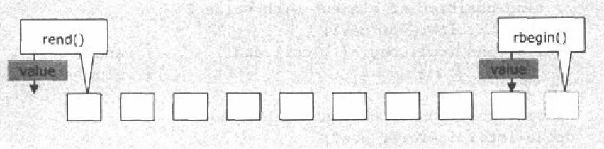
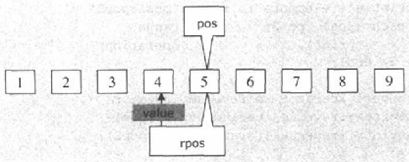

迭代器
迭代器是一种能遍历某个序列的对象 任何东西只要行为像迭代器的 就是迭代器 如数组的指针
辅助函数
void advance (InputIterator& iter,Dist dis)//把迭代器向后移动n 对于随机迭代器 iter+=n Dist distance(InputIterator& i1,InputIterator i2)//返回迭代器距离 i1必须小于i2否则引发未定义行为 对于随机迭代器i1-i2 iter_swap(ForWardIterator i1,ForWardIterator i2)//交换迭代器所指的值的内容<algorithm>
逆向迭代器
逆向迭代器的base()方法返回其正向迭代器 逆向迭代器实际上没包括起点而包括了终点  其迭代器的操作的值其实是下一个迭代器的位置方法 
安插迭代器
对安插迭代器的赋值会被变成安插 多次赋值安插多个值 #include<iterator> *iter //无实际操作 返回迭代器 ++iter //同上 iter++ //同上 iter=value //（或*iter=value ） 安插 三种安插迭代器 back_insert_iterator //调用push_back(value)安插 front_insert_iterator //...push_front(value)... insert_iterator //...insert(iter,value)... back_insert_iterator example
std::list<int> v; //对于 insert_iterator std::insert_iterator<std::list<int>> back_insert(v,v.begin()); std::back_insert_iterator<std::list<int>> back_insert(v); for(int i=0;i<5;++i) back_insert=i; for(std::list<int>::const_iterator i=v.begin();v.end()!=i;++i) std::cout<<*i<<"\n"; std::cout<<"\n"<<std::endl;
stream迭代器
通过stream迭代器可将stream当成算法的原点和终点
ostream_iterator
ostream_iterator<T>(ostream) //产生一个ostream迭代器
ostream——iterator<T>(ostream,delim) //同上 不过每个元素以delim(const char *)分隔符分开
iter=value //将value希尔stream
*iter //无实际操作返回iter
++iter //同上
iter++ //同上
ostream_iterator example
std::list<int> list;
std::insert_iterator<std::list<int>> back_insert(list,list.begin());
for(int i=0;i<5;++i)
back_insert=i;
std::ostream_iterator<int> o_iter(std::cout,"\n");
o_iter=1;
o_iter=2;
std::copy(list.begin(),list.end(),o_iter);
istream_iterator
istream_iterator<T>() //产生一个end-of-ostream迭代器 当读取失败 所有istream_iterator都会被设置为此值 可用之检查读取是否失败
istream_iterator<T>(istream,delim) //同上 不过每个元素以delim(const char *)分隔符分开
iter->member //传回读取元素的成员(如果有的话)
*iter //无实际操作返回iter
++iter //读取下一个元素
iter++ //同上
iter1==iter2
iter1!=iter2
ostream_iterator example
std::istream_iterator<int> inError,in_iter(std::cin);
while(in_iter!=inError)
{
std::cout<<*in_ite<<std::endl;
++in_iter;
}